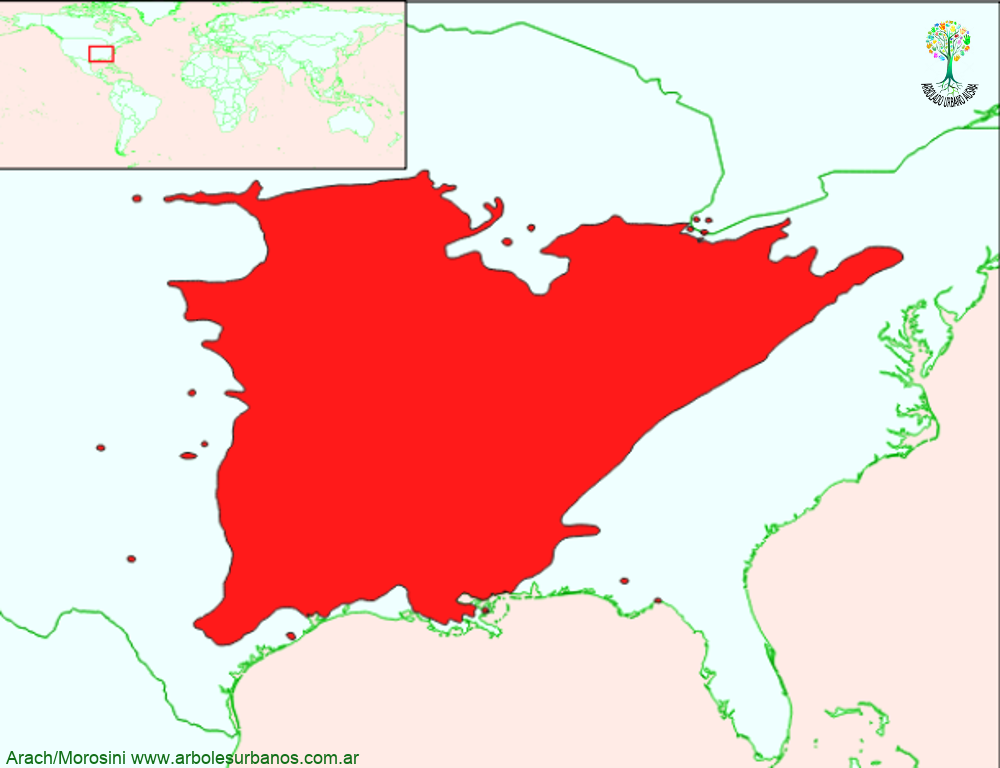

Gleditsia triacanthos (Acacia de tres espinas)

Click en las imágenes para ampliar
Acacia de tres espinas, Acacia negra.
NOMBRE CIENTÍFICO: Gleditsia triacanthos Var. Inerme
FAMILIA BOTÁNICA: Fabáceas.
DESCRIPCIÓN GENERAL: Este árbol comúnmente llega hasta los 30 metros de altura, aunque en los mejores sitios de su área de distribución natural supera los 40 metros y alcanza diámetros de más de 1.5 metros, aunque comunmente en el ámbito urbano no se encuentran ejemplares de más de 20 metros de altura. Es una especie de rápido crecimiento inicial, posee una copa ampliamente extendida. Su corteza es gris oscura lisa en su juventud, en la madurez es escamosa y de color pardo oscuro. Esta variedad no cuenta con las características espinas, que aparecen en el tronco y las ramas.
HOJAS: Las hojas procedentes del leño viejo son pinnadas; las que crecen en los brotes nuevos son bipinnadas. Están compuestas por hasta 16 pares de foliolulos, de hasta 2 cm. de largo y 0.5 cm. de ancho. De color verde brillante; se tornan de un color amarillo encendido en el otoño, perdiéndose la totalidad del follaje a principios del invierno.
FLORES: S on de color verdoso, en racimos separados por sexo, poco vistosos, muy apreciados por las abejas. Florece a fines de la primavera.
FRUTOS: Los frutos maduran al comenzar el otoño y caen a mediados del invierno. Son legumbres de color pardo rojizo o violáceo oscuro, retorcidas y de hasta 30 cm. de largo, son indehiscentes con estrangulamientos entre las semillas de su interior.
ORIGEN: Esta especie es originaria de centro y este de los Estados Unidos.
USOS: Su madera tiene una albura ancha y de color amarillento en contraste con el rojizo-marrón del duramen, con grano atractivo. Es densa, dura y pesada, resistente a la flexión, y golpes, es duradera en contacto con el suelo. Se utiliza localmente para los postes del cerco, y también como madera para palets, embalajes y construcción general. Las variedades con espinas se las utiliza como barrera de defensa contra animales. Existen algunas variedades de menor tamaño y de colores otoñales dorados.
REPRODUCCIÓN: La multiplicación se realiza por semillas, a las que al igual que muchas leguminosas, se las debe someter a tratamientos pregerminativos. Se logra buena germinación, remojando las semillas en ácido sulfúrico durante una hora y luego estratificando a 2ºC por tres meses. También se la puede multiplicar por estacas.
PARTICULARIDADES: En su lugar de origen sus frutos se utilizan como parte de la alimentación del ganado, aunque presente efectos secundarios (laxante). Es una especie agresiva, que se ha asilvestrado en parte de las provincias de Buenos Aires, Santa Fe, Córdoba y la Pampa; esto es en parte facilitado porque comienza a producir semillas a los 7 años y es dispersada por diferentes animales.
{kind=link}
{kind=link}
{kind=link}
{kind=link}
{kind=link}